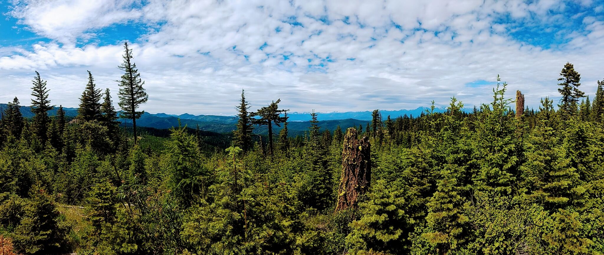
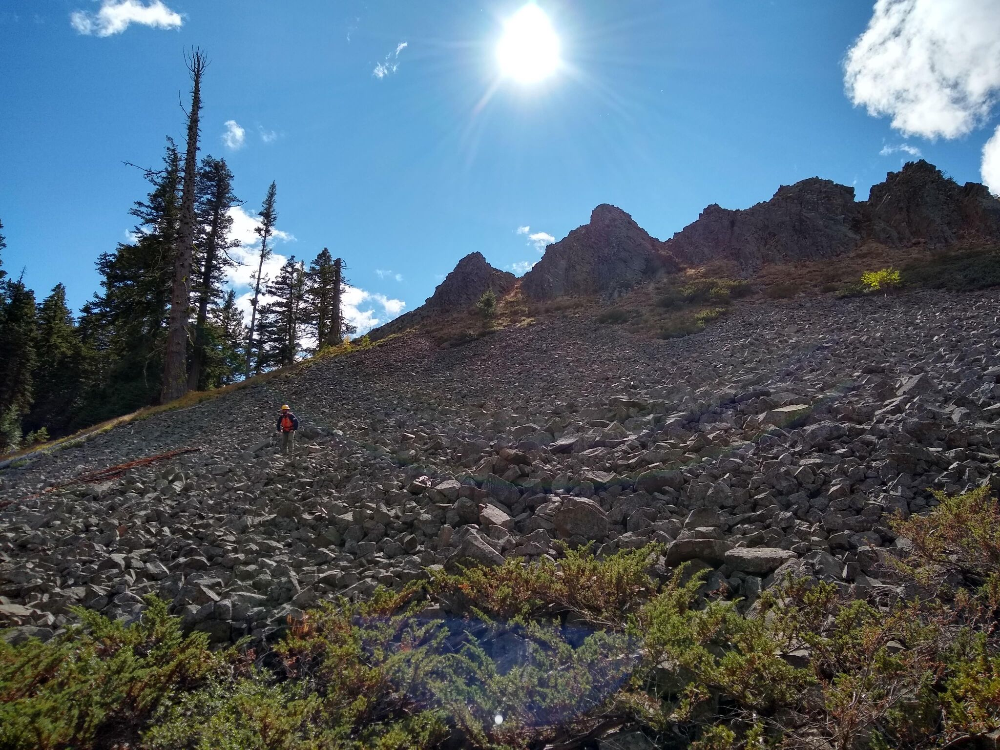
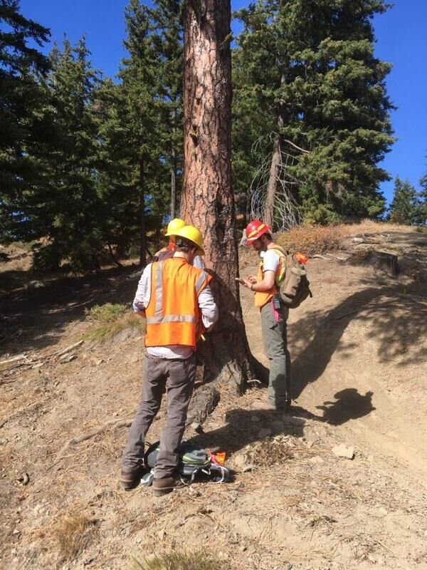

Cascades Corridor Land-use Project
Archaeological research has benefited from decades of site-specific projects, regional comparisons, and theory building from case studies. While these types of inquiries are still important in advancing the discipline, recent research themes concerning the emergence of complex social-ecological systems, such as long-term land-use legacies and the development of the Anthropocene, require a new approach to archaeological data. Large-scale syntheses of archaeological and paleoenvironmental information provide one possible way forward to addressing new research themes. In more concise terms—‘big questions’ require ‘big data’ to help answer them.
In partnership with United States Forest Service (USFS) archaeologists from the Okanagan-Wenatchee National Forest, and colleagues at Arizona State University, we are developing Bayesian methods for assessing changing land-use intensities through time within Washington State’s central Cascades corridor. The archaeological data collected by the USFS represents an incredible investment in time, resources, and expertise over several decades. The result is a spatially concise database of archaeological material that spans from the late Pleistocene to the mid-twentieth century over millions of hectares across the American West. Synthesizing these data will allow us to examine the changing relationship between human land-use, environmental change, and fire over unprecedented time and spatial scales—allowing us to test theories concerning ecological and anthropogenic legacies on landscapes in western North America.